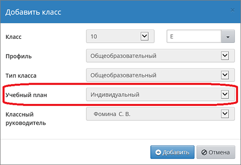

 |
| 1. | Если класс получил признак «Учебный план=Индивидуальный», то в учебных разделах системы «Сетевой Город. Образование», таких как «Классный журнал», «Расписание», «Отчёты» и др., вместо названия класса будет выведен номер параллели и знак «звёздочка».
|
| 2. | «Звёздочка» несёт очень важную информацию: это значит, что в данной параллели ученики могут объединяться в группы не по классам, а по предметам (с указанием уровня освоения).
|
| 3. | Если в таблице КУП выводятся предметы и классы, то в таблице ИУП – выводятся предметы и уровни освоения.
|
| 4. | В классе, который работает по ИУП, доступ классного руководителя к информации немного сужается.
|
Причём система «Сетевой Город. Образование» позволяет иметь одновременно в одной параллели классы обоих типов: и «классические», и «индивидуальные». То есть возможен вариант, когда не все классы в пределах одной параллели переведены на ИУП.